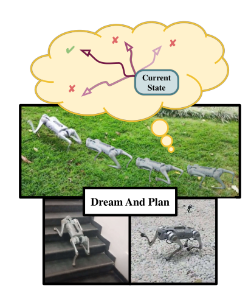
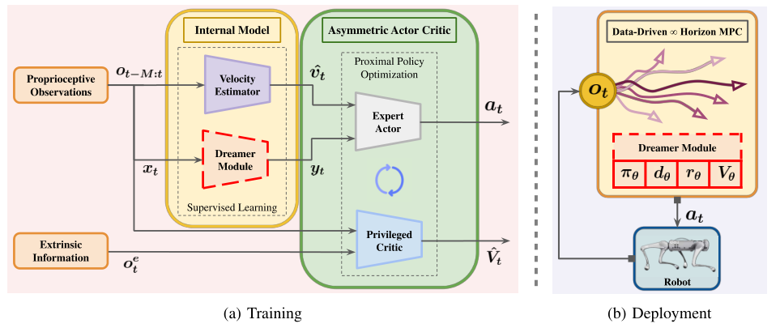
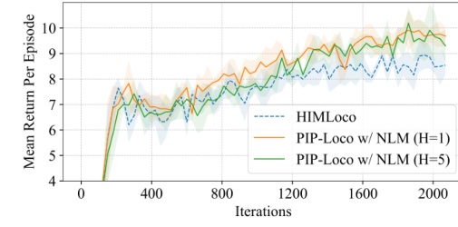
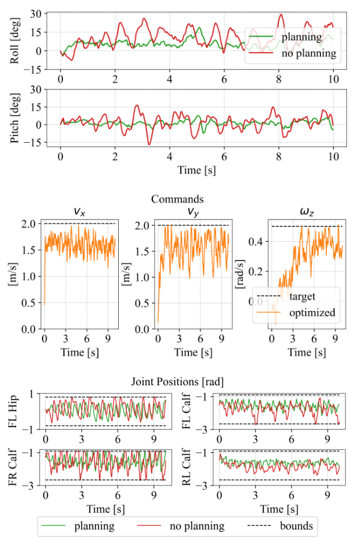
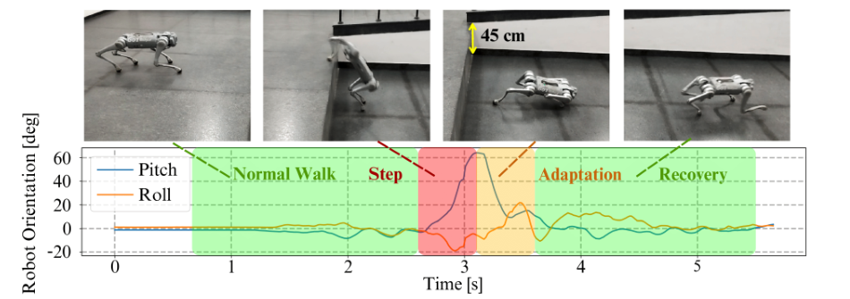

Background & Motivation
PIP-Loco 想把 MPC 的「規劃 + 約束 + 可解釋」接回 model-free RL 的強韌步態。訓練時:PPO 的非對稱 actor-critic 與一個 internal model(速度估測器 + Dreamer 模組)單階段共同學習;Dreamer 學會在觀測空間「做夢」預測未來 \(H\) 步觀測,並附帶獎勵模型、行為克隆的策略 \(\pi_\theta\)、以及蒸餾自特權 critic 的價值 \(V_\theta\)。部署時:丟掉 expert actor,改由 Dreamer 解一個 \(H=10\) 步、以 \(V_\theta\) 當終端價值的受約束 MPPI(所謂「無限視野」),同時最佳化動作與速度命令。結果:訓練回報勝過 HIMLoco(9.52–9.69 vs 8.59;高雜訊 8.16 vs 1.73),Unitree Go1 實機走過斜坡、碎石、樓梯與 45 cm 落差;但規劃本身帶來多少好處,只在一段 10 秒模擬中定性展示。
PIP-Loco tries to put MPC's "planning + constraints + interpretability" back on top of model-free RL's robust gaits. In training, a PPO asymmetric actor-critic and an internal model (a velocity estimator + a Dreamer module) are learned together in one stage; the Dreamer learns to "dream" the next \(H\) observations in observation space, along with a reward model, a behavior-cloned policy \(\pi_\theta\), and a value \(V_\theta\) distilled from the privileged critic. At deployment, the expert actor is dropped and the Dreamer solves a constrained MPPI over \(H=10\) steps with \(V_\theta\) as terminal value (the "infinite horizon"), optimizing both actions and the velocity command. Results: higher training return than HIMLoco (9.52-9.69 vs 8.59; 8.16 vs 1.73 under high noise), and a real Unitree Go1 walks slopes, gravel, stairs and a 45 cm drop; but how much planning itself helps is shown only qualitatively in one 10 s simulation run.

如果只有 30 秒In 30 seconds
- 問題 — MPC 能加約束、能規劃,但依賴單剛體/倒單擺等簡化模型,在快速變化的地面上不夠強韌;model-free RL 很強韌,卻天生不會處理約束、也不會規劃;DreamWaQ/HIMLoco 的 internal model 只預測一步 latent,從沒被拿來規劃。
- Problem — MPC can enforce constraints and plan, but relies on simplified models (single rigid body, inverted pendulum) and is brittle on rapidly changing ground; model-free RL is robust but inherently cannot handle constraints or plan; the internal models of DreamWaQ/HIMLoco predict only one-step latents and are never used for planning.
- 方法 — 訓練時把 internal model 擴成 \(H\) 步觀測「做夢」的 Dreamer 模組,並讓它的預測當 expert actor 的輸入(兩者互相依賴);部署時把 Dreamer 當成資料驅動的 MPC 模型,用 TD-MPC 式的受約束 MPPI 同時挑動作與速度命令。
- Method — In training, extend the internal model into a Dreamer module that "dreams" \(H\) future observations, and feed its predictions to the expert actor (the two are co-dependent); at deployment, use the Dreamer as a data-driven MPC model, with a TD-MPC-style constrained MPPI choosing both actions and the velocity command.
- 結果 — 2k 次迭代、5 seeds 的訓練回報:NLM 9.52–9.69 vs HIMLoco 8.59;高雜訊下 HIMLoco 崩到 1.73 ± 5.88,NLM 仍有 8.16;極端速度命令的模擬中,規劃讓 roll/pitch 擺幅與關節觸限明顯變小;實機 Go1 板載 Jax 規劃 300–500 Hz。
- Results — Training return after 2k iterations, 5 seeds: NLM 9.52-9.69 vs HIMLoco 8.59; under high noise HIMLoco collapses to 1.73 ± 5.88 while NLM keeps 8.16; in a sim run with extreme commands, planning visibly shrinks roll/pitch swings and joint-limit hits; on hardware the Go1 runs the planner onboard in Jax at 300-500 Hz.
領域脈絡Field context
四足控制長年有兩條路線。模型派 MPC(MIT Cheetah 3 的凸 MPC、kino-dynamic MPC、hybrid-systems DDP)能把約束直接寫進最佳化、輸出整段可檢視的計畫;但它假設單剛體或倒單擺模型、足端軌跡也只在有限的類別裡挑,很難湧現新動作,在雜亂地形上不夠萬用。
Quadruped control has long had two camps. Model-based MPC (MIT Cheetah 3 convex MPC, kino-dynamic MPC, hybrid-systems DDP) writes constraints straight into the optimization and outputs a plan you can inspect; but it assumes a single-rigid-body or inverted-pendulum model, and picks foot trajectories from a limited class, so emergent behavior is hard and it is less versatile on cluttered terrain.
model-free RL(Isaac Gym 大規模平行訓練、Walk These Ways、RMA、DreamWaQ、HIMLoco)在多地形上已勝過 MPC,但輸出只是一個「反射式」的網路:不能在部署時加約束、改目標,也看不到它「打算做什麼」。另一個實際難題是可觀測性——機身線速度無法直接量到,於是有了 DreamWaQ/HIMLoco 這類「internal model」估測器。
Model-free RL (massively parallel Isaac Gym training, Walk These Ways, RMA, DreamWaQ, HIMLoco) now beats MPC across terrains, but its output is a "reflexive" network: you cannot add constraints or change the objective at deployment, nor see what it intends to do. A practical hurdle is observability — base linear velocity is not measured directly — hence internal-model estimators such as DreamWaQ/HIMLoco.
第三條線是學習模型 + 規劃的 model-based RL:Dreamer 系列在 latent 裡想像、TD-MPC/TD-MPC2 與 LOOP 用「短視野規劃 + 終端價值」。PIP-Loco 借用後者的規劃器,卻刻意不在訓練時規劃(太貴),只在部署時才啟用。
A third line is learned model + planning model-based RL: the Dreamer family imagines in latent space; TD-MPC/TD-MPC2 and LOOP use "short-horizon planning + terminal value." PIP-Loco borrows the latter's planner but deliberately does not plan during training (too expensive), only at deployment.
[導讀補充] 這篇的定位是「RL 訓練、MPC 部署」的橋:不改變已經很成熟的 legged_gym + PPO 訓練配方,只是讓 RL 過程「順便」產出 MPC 需要的四個零件(模型、獎勵、提案策略、終端價值)。賭注是這些零件夠準,讓一個簡單的取樣式規劃器在部署時能修正策略的「泛化但次佳」動作。
[guide note] The paper positions itself as a bridge: train with RL, deploy with MPC. It leaves the mature legged_gym + PPO recipe intact and simply has RL produce, as by-products, the four parts MPC needs (model, reward, proposal policy, terminal value). The bet is that these parts are accurate enough for a simple sampling planner to correct the policy's "generalized but suboptimal" actions at deployment.
核心洞見 · KEY INSIGHTSKEY INSIGHTS
值得帶走的不是某個分數,而是這幾個設計觀念:
What is worth taking away is not a score but these design ideas:
- 訓練 model-free、部署 model-based。 規劃被延後到部署階段,避開在 4096 個平行環境裡跑 MPC 的速度與記憶體瓶頸;代價是訓練時從沒見過規劃器自己產生的狀態分佈。
- Train model-free, deploy model-based. Planning is deferred to deployment, dodging the speed and memory bottleneck of running MPC across 4096 parallel envs; the price is that training never sees the state distribution the planner itself induces.
- 把 RL 的副產品變成 MPC 的零件。 特權 critic \(V_e\) → 終端價值 \(V_\theta\)(把有限 \(H=10\) 延伸成「無限視野」);expert actor \(\pi_e\) → 行為克隆的 \(\pi_\theta\)(warm start 與 \(M_\pi=30\) 條引導軌跡);internal model 的 dynamics/reward 頭 → 預測模型與目標函數。
- Turn RL by-products into MPC parts. Privileged critic \(V_e\) → terminal value \(V_\theta\) (stretching the finite \(H=10\) into an "infinite horizon"); expert actor \(\pi_e\) → behavior-cloned \(\pi_\theta\) (warm start and \(M_\pi=30\) guide trajectories); the internal model's dynamics/reward heads → the prediction model and objective.
- 在觀測空間規劃,不在 latent。 部署用的 NLM 直接預測關節角、關節速度、重力投影等有物理意義的量,所以關節極限、姿態穩定等約束能直接寫在 \(\hat o\) 上;作者明言 latent 規劃會犧牲可解釋性與加約束的能力。
- Plan in observation space, not latent space. The deployed NLM predicts physically meaningful quantities (joint angles, joint velocities, projected gravity), so joint limits and body-stability constraints can be written directly on \(\hat o\); the authors state that latent-space planning would compromise interpretability and constraint enforcement.
- 速度命令也是決策變數。 規劃器不只修正動作,還把使用者的 twist command 改寫成「做得到且安全」的 \(\nu^*_{\text{cmd}}\)。[導讀補充] 這本質上是一個學習式的 reference governor。
- The velocity command is a decision variable too. The planner corrects not only actions but rewrites the user twist command into a feasible, safe \(\nu^*_{\text{cmd}}\). [guide note] In effect a learned reference governor.
- 「做夢」對訓練有幫助,但越複雜不一定越好。 在 actor 輸入加上預測的未來觀測,訓練回報勝 HIMLoco、高雜訊下差距最大;然而更長的 \(H\) 與 latent 沒帶來一致改善——最簡單、無 latent、單幀輸入的 NLM 最好用。
- "Dreaming" helps training, but more complex is not better. Adding predicted future observations to the actor input beats HIMLoco in training return, most of all under high noise; yet longer \(H\) and latents give no consistent gain — the simplest, latent-free, single-frame NLM works best.
- MPC 的老優點回到 RL 控制器:部署時可增刪約束、改獎勵而不必重訓。 但論文只主張了這個能力,沒有實驗展示「改約束後的行為」。
- MPC's old perk returns to RL controllers: add or remove constraints and reshape rewards at deployment without retraining. But the paper only asserts this ability; no experiment shows behavior after a constraint change.
Problem Diagnosis
現況 vs 痛點Status quo vs pain points
| 現有做法Existing approach | 它的痛點Its pain point |
|---|---|
| 物理模型 MPCPhysics-model MPC Di Carlo 2018 · Li & Wensing 2023 | 可加約束、可解釋,但嚴格依賴簡化模型(單剛體、倒單擺),足端軌跡類別受限;難隨任務複雜度擴展,在快速變化的地面上常失去強韌性。Constraint-aware and interpretable, but tied to simplified models (single rigid body, inverted pendulum) and a limited class of foot trajectories; scales poorly with task complexity and often loses robustness on rapidly changing surfaces. |
| Model-free RL Walk These Ways · RMA | 多地形強韌、能湧現動作,但沒有約束處理、沒有規劃;想改目標或加安全限制只能重訓。多地形同時訓練又常得到「泛化但次佳」的動作。Robust across terrains with emergent motion, but no constraint handling, no planning; changing the objective or adding a safety limit means retraining. Multi-terrain training also tends to yield generalized but suboptimal actions. |
| Internal-model 估測器Internal-model estimators DreamWaQ · HIMLoco | 解決了速度不可觀測的問題,但只做一步 latent 預測(\(H=1\)),沒有探索更長的「做夢」,更沒拿來規劃。Fix velocity unobservability, but only do one-step latent prediction (\(H=1\)); longer "dreaming" is unexplored, let alone planning with it. |
| 訓練中規劃的 MBRLMBRL that plans during training LOOP · MoPAC · TD-MPC(2) · DMD-MPC | 樣本效率最好,但在大規模平行 RL 環境裡每步都解 MPC,推論速度與記憶體成為瓶頸,牆鐘時間暴增,不改架構就無法直接套用。State of the art in sample efficiency, but solving MPC at every step inside massively parallel RL bottlenecks inference speed and memory and inflates wall-clock time — impractical without substantial changes. |
核心問題:能否在不犧牲 RL 強韌性、也不拖慢平行訓練的前提下,讓本體感測的四足控制器在部署時具備「規劃 + 約束 + 可解釋」?
The core question: can a proprioceptive quadruped controller gain "planning + constraints + interpretability" at deployment, without giving up RL robustness or slowing down parallel training?
論文的定位表(重建 Table I)The paper's positioning table (Table I rebuilt)
| 方法Method | 觀測歷史Obs. history | 適應模組Adaptation | Internal model | 多地形Multi-terrain | 部署時規劃Planning |
|---|---|---|---|---|---|
| Walk These Ways | 30 | latent | − | ✗ | ✗ |
| RMA | 50 | latent | − | ✓ | ✗ |
| DreamWaQ, HIMLoco | 6 | − | latent \((H=1)\) | ✓ | ✗ |
| PIP-Loco w/ NLM | 1 | − | 觀測 \((H\ge 1)\)observations \((H\ge 1)\) | ✓ | ✓ |
| PIP-Loco w/ PLM | 6 | − | 觀測 + latent \((H\ge 1)\)obs. + latent \((H\ge 1)\) | ✓ | ✓ |
| PIP-Loco w/ FLM | \(H\) | − | latent \((H\ge 1)\) | ✓ | ✓ |
注意:三種 PIP-Loco 變體都標「可規劃」,但實際部署與規劃實驗只用了 NLM;PLM/FLM 只出現在訓練回報的消融中。
Note: all three PIP-Loco variants are ticked for planning, but only NLM is actually deployed and used in planning experiments; PLM/FLM appear only in the training-return ablation.
Gap 表 — 誰缺什麼,PIP-Loco 怎麼補Gap table — who lacks what, and how PIP-Loco fills it
| 方法Method | 限制Limitation | PIP-Loco 如何補上How PIP-Loco fills it |
|---|---|---|
| 物理模型 MPCPhysics-model MPC | 手寫簡化模型。Hand-written simplified model. | 用從模擬資料學到的觀測空間動力模型 \(d_\theta\)取代;RL 策略當提案分佈。Replaced by a learned observation-space dynamics model \(d_\theta\) trained on sim data; the RL policy serves as a proposal distribution. |
| Model-free RL | 無約束、無規劃、不可檢視。No constraints, no planning, opaque. | 部署時受約束的 MPPI過濾不安全動作;夢到的軌跡可供檢視。A constrained MPPI filters unsafe actions at deployment; dreamed trajectories can be inspected. |
| DreamWaQ / HIMLoco | 一步 latent,只當 actor 輸入。One-step latent, used only as actor input. | \(H\) 步觀測做夢,同時當 actor 輸入與部署時的規劃模型。\(H\)-step observation dreaming, serving both as actor input and as the deployment planning model. |
| TD-MPC / LOOP | 訓練中規劃,平行化成本高。Plan during training; costly to parallelize. | 只在部署時規劃;訓練仍是純 PPO + 監督頭。Plan only at deployment; training stays plain PPO + supervised heads. |
[導讀補充] 這裡的痛點主要是功能性的(能不能加約束、能不能看計畫、能不能改命令),而不是「回報不夠高」。因此評估這篇時,真正該問的是:規劃器有沒有在可量化的指標上(約束違反率、跌倒率、追蹤誤差)勝過「直接用策略」?這正是論文最薄的地方(見 05)。
[guide note] The pain points here are mostly functional (can you add constraints, inspect the plan, adjust the command), not "return is too low." So the right test is whether the planner beats "just run the policy" on quantifiable metrics (constraint-violation rate, fall rate, tracking error) — exactly where the paper is thinnest (see 05).
Core Method
整體流程:一次訓練,兩種用法Pipeline: one training run, two uses

問題設定:POMDP + 非對稱 actor-criticSetup: POMDP + asymmetric actor-critic
四足運動被建模成無限視野折扣 POMDP \(\mathcal M=\{\mathcal S,\mathcal A,\mathcal O,r,P,\gamma,F\}\),其中 \(F:\mathcal S\to\mathcal O\) 產生觀測,\(\mathcal O^M\subset\mathbb R^{p\times M}\) 是長度 \(M\) 的觀測歷史。用 非對稱 actor-critic 求解:actor 只看本體觀測,critic 看特權資訊。
Locomotion is modeled as an infinite-horizon discounted POMDP \(\mathcal M=\{\mathcal S,\mathcal A,\mathcal O,r,P,\gamma,F\}\), where \(F:\mathcal S\to\mathcal O\) produces observations and \(\mathcal O^M\subset\mathbb R^{p\times M}\) is an \(M\)-step observation history. It is solved with an asymmetric actor-critic: the actor sees proprioception only, the critic sees privileged information.
- 觀測 \(o_t\):相對名目姿態的關節角 \(q_t-q_{\text{nominal}}\)、關節速度 \(\dot q_t\)、重力投影 \(g\)、速度命令 \((v^{\text{cmd}}_{xy},\omega^{\text{cmd}}_z)\)、上一步動作 \(a_{t-1}\)。沒有機身線速度。
- Observation \(o_t\): joint angles relative to nominal \(q_t-q_{\text{nominal}}\), joint velocities \(\dot q_t\), projected gravity \(g\), velocity command \((v^{\text{cmd}}_{xy},\omega^{\text{cmd}}_z)\), previous action \(a_{t-1}\). No base linear velocity.
- 動作 \(a_t\):12 個關節相對名目角的擾動,\(q_t=a_t+q_{\text{nominal}}\),再經 actuator network 轉成力矩。
- Action \(a_t\): perturbations of the 12 joint angles around nominal, \(q_t=a_t+q_{\text{nominal}}\), turned into torques by an actuator network.
- 獎勵:沿用 HIMLoco 的獎勵項(追蹤線/角速度命令、維持身高與姿態等),外加一個barrier function 式獎勵促進平滑、減少突兀動作。
- Reward: HIMLoco's reward terms (track linear/angular velocity commands, keep body height and orientation, etc.) plus a barrier-function-based reward term for smooth, less aggressive motion.
- 特權觀測 \(o^e_t\)(只給 critic):機器人周圍地形高度場、外力、機身線速度等。
- Privileged observation \(o^e_t\) (critic only): the terrain height field around the robot, external forces, base linear velocity, and more.
expert actor 與特權 critic 用 PPO 訓練(clip 0.2、GAE 0.95、\(\gamma=0.99\)、Adam lr \(10^{-3}\)):
The expert actor and privileged critic are trained with PPO (clip 0.2, GAE 0.95, \(\gamma=0.99\), Adam lr \(10^{-3}\)):
[導讀補充] 上式是標準 PPO 形式,論文只給出超參數;優勢 \(\hat A_t\) 由特權 critic \(V_e(o_t,o^e_t)\) 經 GAE 計算。
[guide note] The formula is standard PPO; the paper only gives the hyperparameters. The advantage \(\hat A_t\) comes from GAE on the privileged critic \(V_e(o_t,o^e_t)\).
Internal model:速度估測器 + 三種 DreamerInternal model: velocity estimator + three Dreamers
速度估測器 \(v_\phi:\mathcal O^M\to\mathbb R^3\) 從觀測歷史估機身速度。Dreamer 模組都包含動力模型 \(d_\theta\)、克隆策略 \(\pi_\theta\)、獎勵模型 \(r_\theta\)、價值函數 \(V_\theta\)與一個選用的 encoder \(\alpha_\theta\);三個變體只差在「用不用 latent、看多長歷史」。
The velocity estimator \(v_\phi:\mathcal O^M\to\mathbb R^3\) estimates base velocity from the observation history. Every Dreamer has a dynamics model \(d_\theta\), cloned policy \(\pi_\theta\), reward model \(r_\theta\), value function \(V_\theta\), plus an optional encoder \(\alpha_\theta\); the three variants differ only in whether they use latents and how much history they see.
(a) No-Latent Module (NLM) — 直接拿當前觀測 \(x_t=o_t\),以 \(d^{\text{NLM}}_\theta:\mathcal O\times\mathcal A\to\mathcal O\) 和 \(\pi^{\text{NLM}}_\theta:\mathcal O\to\mathcal A\) 自迴歸地夢出未來 \(H\) 步觀測(\(\tilde o\) 表示夢到的觀測):
(a) No-Latent Module (NLM) — takes the current observation \(x_t=o_t\) and autoregressively dreams the next \(H\) observations with \(d^{\text{NLM}}_\theta:\mathcal O\times\mathcal A\to\mathcal O\) and \(\pi^{\text{NLM}}_\theta:\mathcal O\to\mathcal A\) (\(\tilde o\) denotes a dreamed observation):
另有 \(r^{\text{NLM}}_\theta:\mathcal O\times\mathcal A\to\mathbb R\)、\(V^{\text{NLM}}_\theta:\mathcal O\to\mathbb R\)。因推論最簡單、表現又有競爭力,部署只用 NLM。
It also has \(r^{\text{NLM}}_\theta:\mathcal O\times\mathcal A\to\mathbb R\) and \(V^{\text{NLM}}_\theta:\mathcal O\to\mathbb R\). Being the simplest to run and competitive in performance, NLM is the only variant deployed.
(b) Partially-Latent Module (PLM) — 輸入觀測歷史 \(x_t=o_{t-M:t}\),encoder \(\alpha^{\text{PLM}}_\theta:\mathcal O^M\to\mathbb R^q\) 把歷史壓成 latent \(z_t\);動力、獎勵、價值、策略都額外吃 \(z_k\) 與速度估計 \(v_k\):
(b) Partially-Latent Module (PLM) — takes an observation history \(x_t=o_{t-M:t}\); an encoder \(\alpha^{\text{PLM}}_\theta:\mathcal O^M\to\mathbb R^q\) compresses it into a latent \(z_t\); dynamics, reward, value and policy all additionally take \(z_k\) and the velocity estimate \(v_k\):
(c) Fully-Latent Module (FLM) — 再把 PLM 夢到的未來也丟進同一個 encoder 壓縮,並設 \(M=H\) 以共用 encoder:
(c) Fully-Latent Module (FLM) — additionally passes PLM's dreamed future through the same encoder, with \(M=H\) so a single encoder suffices:
作者的預期是 PLM/FLM 資訊更豐富、在強時間相依的環境更好,但計算更貴;實驗結果反而是 latent 沒有提升抗雜訊能力,FLM 最差(見 04)。
The authors expected PLM/FLM to carry richer information and help where temporal dependence is strong, at higher compute cost; the experiments instead show latents do not improve noise robustness, and FLM is worst (see 04).
Internal model 的學習目標Learning objectives of the internal model
論文以文字描述:速度估測器、動力模型、獎勵模型都用 MSE;encoder 用 HIMLoco 的對比學習;\(\pi_\theta\) 行為克隆 expert actor,\(V_\theta\) 監督式擬合特權 critic。寫成式子(NLM 版):
The paper states these in words: velocity estimator, dynamics and reward models use MSE; the encoder uses HIMLoco-style contrastive learning; \(\pi_\theta\) behavior-clones the expert actor and \(V_\theta\) is supervised to match the privileged critic. Written out (NLM version):
[導讀補充] 論文沒寫出明確公式:\(\mathcal L_d\) 是單步 teacher-forcing 還是多步展開監督、\(\mathcal L_\pi\) 是 MSE 還是對數似然、\(y_t\) 是否對 actor 梯度截斷,皆未說明;上式是最自然的讀法。\(v_t\) 是模擬器中的真實機身速度。
[guide note] The paper gives no explicit formulas: whether \(\mathcal L_d\) is one-step teacher-forced or multi-step rollout supervision, whether \(\mathcal L_\pi\) is MSE or log-likelihood, and whether \(y_t\) is gradient-stopped into the actor are all unstated; the above is the most natural reading. \(v_t\) is the true base velocity from the simulator.
expert actor 的輸入 \(y_t\) 是 Dreamer 夢出來的未來,而 Dreamer 用來做夢的 \(\pi_\theta\) 又是在模仿 expert actor。於是 \(y_t\) 的品質取決於 \(\pi_\theta\),\(\pi_\theta\) 又取決於 \(\pi_e\),兩者在單一階段同時學。作者聲稱這種回饋「促進探索、找到更好的步態」,也讓非對稱 actor-critic 隱式地把特權資訊編進 internal model 的輸出,不需 RMA 式的兩階段 adaptation 回歸。
The expert actor's input \(y_t\) is the future dreamed by the Dreamer, while the \(\pi_\theta\) the Dreamer dreams with is imitating the expert actor. So the quality of \(y_t\) depends on \(\pi_\theta\), which depends on \(\pi_e\), and both are learned simultaneously in one stage. The authors claim this loop "facilitates exploration for better locomotion," and that the asymmetric actor-critic implicitly pushes privileged information into the internal model outputs, with no RMA-style two-phase adaptation regression.
部署:資料驅動的無限視野 MPCDeployment: data-driven infinite-horizon MPC
在當前觀測 \(o_t\) 下,求最佳動作序列 \(a^*_{t:t+H}\) 與安全的 twist 命令 \(\nu^*_{\text{cmd}}:=(v^{\text{cmd}}_{xy},\omega^{\text{cmd}}_z)\):
At the current observation \(o_t\), solve for the optimal action sequence \(a^*_{t:t+H}\) and a safe twist command \(\nu^*_{\text{cmd}}:=(v^{\text{cmd}}_{xy},\omega^{\text{cmd}}_z)\):
\(\hat o_t\) 是把 \(o_t\) 中「速度命令」那幾維替換成最佳化變數 \(\nu_{\text{cmd}}\) 的觀測;為簡化,\(\nu_{\text{cmd}}\) 在整個視野內固定。前 \(H\) 步回報由學到的獎勵模型累積,之後的無窮尾巴用 \(\gamma^H V_\theta\) 一次概括——這就是「無限視野」的來源。作者指出此問題是 NP-hard,選用取樣式求解以求速度。
\(\hat o_t\) is \(o_t\) with its velocity-command entries replaced by the decision variable \(\nu_{\text{cmd}}\); for simplicity \(\nu_{\text{cmd}}\) is held fixed over the horizon. The first \(H\) steps of return come from the learned reward model; the infinite tail beyond is summarized once by \(\gamma^H V_\theta\) — the source of "infinite horizon." The authors note the problem is NP-hard and choose a sampling-based solver for speed.
Algorithm 1:受約束 MPPI(每個控制步)Algorithm 1: constrained MPPI (per control step)
- Warm start:\(t=0\) 時用 \(\pi_\theta\) 搭配 \(d_\theta\) 展開來初始化高斯參數 \((\mu,\sigma)\);之後每步沿用上一步的 \((\mu_{t-1},\sigma_{t-1})\)。
- Warm start: at \(t=0\), initialize the Gaussian \((\mu,\sigma)\) by rolling out \(\pi_\theta\) with \(d_\theta\); afterwards reuse the previous step's \((\mu_{t-1},\sigma_{t-1})\).
- 取樣(共 \(N=6\) 次迭代):用 \(\pi_\theta\) + \(d_\theta\) 收集 \(M_\pi=30\) 條「命令 + 動作」軌跡,再從 \(\mathcal N(\mu_{i-1},\sigma_{i-1})\) 抽 \(M=500\) 條,長度皆為 \(H=10\)。
- Sample (for \(N=6\) iterations): collect \(M_\pi=30\) command-and-action trajectories with \(\pi_\theta\) + \(d_\theta\), plus \(M=500\) from \(\mathcal N(\mu_{i-1},\sigma_{i-1})\), all of length \(H=10\).
- 評分:每條軌跡在 \(d_\theta\) 中展開,累積折扣獎勵與折扣約束成本,加終端價值並扣成本罰則(見下式)。
- Score: roll each trajectory through \(d_\theta\), accumulate discounted reward and discounted constraint cost, add the terminal value and subtract the cost penalty (formula below).
- 可行性過濾:只保留 \(C_j\le b\) 的軌跡進可行集 \(A^S_\tau\)。
- Feasibility filter: keep only trajectories with \(C_j\le b\) in the feasible set \(A^S_\tau\).
- 精英 + 動量更新:按回報排序取前 \(M_{\text{elite}}=60\) 條,擬合高斯,再以動量 \(\beta=0.95\) 混合舊參數。
- Elite + momentum update: sort by return, take the top \(M_{\text{elite}}=60\), fit a Gaussian, then blend with the old parameters via momentum \(\beta=0.95\).
- 輸出:\(\nu_{\text{cmd}}\) 與從 \(\mathcal N(\mu_N,\sigma_N)\) 取樣的第一個動作。
- Output: \(\nu_{\text{cmd}}\) and the first action sampled from \(\mathcal N(\mu_N,\sigma_N)\).
約束在這裡被處理了兩次:一次是回報中的軟罰則 \(-\lambda C_j\)(\(\lambda=1\)),一次是 \(C_j\le b\) 的硬過濾。[導讀補充] Table II 列了溫度 \(T=0.5\),但 Algorithm 1 沒寫它用在哪;在超參數幾乎相同的 TD-MPC 中,溫度用來給精英加權:\(\Omega_j=\exp\!\big(T\,(R_j-\max_{j'}R_{j'})\big)\),\(\mu_{\text{elite}}=\sum_j\Omega_j\,\Gamma_j/\sum_j\Omega_j\)(\(\Gamma_j\) 為第 \(j\) 條軌跡的決策變數)。
Constraints are handled twice: once as a soft penalty \(-\lambda C_j\) in the return (\(\lambda=1\)), once as a hard filter \(C_j\le b\). [guide note] Table II lists a temperature \(T=0.5\), but Algorithm 1 never says where it enters; in TD-MPC, whose hyperparameters are nearly identical, the temperature weights the elites: \(\Omega_j=\exp\!\big(T\,(R_j-\max_{j'}R_{j'})\big)\), \(\mu_{\text{elite}}=\sum_j\Omega_j\,\Gamma_j/\sum_j\Omega_j\) (\(\Gamma_j\) being trajectory \(j\)'s decision variables).
規劃器超參數(Table II)與 TD-MPC 對照Planner hyperparameters (Table II) vs TD-MPC
| 超參數Hyperparameter | PIP-Loco | TD-MPC 預設 [導讀補充]TD-MPC default [guide note] |
|---|---|---|
| 視野Horizon \(H\) | 10 | 5 |
| MPC 迭代數MPC iterations \(N\) | 6 | 6 |
| 高斯樣本數Gaussian samples \(M\) | 500 | 512 |
| 策略樣本數Policy samples \(M_\pi\) | 30 | 約 5%(~25)about 5% (~25) |
| 精英數Elites \(M_{\text{elite}}\) | 60 | 64 |
| 折扣Discount \(\gamma\) | 0.99 | 0.99 |
| 約束權重Constraint weight \(\lambda\) | 1.0 | − |
| 動量Momentum \(\beta\) | 0.95 | 0.1(作用在舊均值上)0.1 (on the old mean) |
| 溫度Temperature \(T\) | 0.5 | 0.5 |
[導讀補充] 規劃器幾乎就是 TD-MPC 的 MPPI 照搬(PIP-Loco 新精英權重 0.95、舊值 0.05;TD-MPC 舊均值 0.1、新值 0.9,量級相近),差別在:(1) 在觀測空間而非 latent;(2) 多了約束罰則與可行性過濾;(3) 多了速度命令這個決策變數;(4) \(V_\theta\) 是從 PPO critic 蒸餾,不是用 TD 學的;(5) 只在部署時規劃。
[guide note] The planner is essentially TD-MPC's MPPI transplanted (PIP-Loco puts 0.95 on the new elite fit and 0.05 on the old value; TD-MPC puts 0.1 on the old mean and 0.9 on the new one, a similar magnitude). Differences: (1) observation space, not latent; (2) an added constraint penalty and feasibility filter; (3) the velocity command as an extra decision variable; (4) \(V_\theta\) is distilled from the PPO critic, not TD-learned; (5) planning happens only at deployment.
符號白話對照Symbols in plain words
| \(o_t,\ o^e_t\) | 本體觀測(關節、重力投影、命令、上步動作);特權觀測(地形高度、外力、真實線速度),只給 critic。Proprioceptive observation (joints, gravity, command, last action); privileged observation (height field, external force, true linear velocity), critic only. |
| \(\hat v_t=v_\phi(o_{t-M:t})\) | 從長度 \(M\) 的觀測歷史估出的機身速度。Base velocity estimated from an \(M\)-step observation history. |
| \(y_t\) | Dreamer 的輸出(夢到的未來觀測及/或 latent),當 expert actor 的額外輸入。Dreamer output (dreamed future observations and/or latents), an extra input to the expert actor. |
| \(\tilde o,\ \hat o\) | \(\tilde o\):訓練時夢到的觀測;\(\hat o\):部署時把命令換成 \(\nu_{\text{cmd}}\) 的觀測。\(\tilde o\): observations dreamed in training; \(\hat o\): deployment observations with the command replaced by \(\nu_{\text{cmd}}\). |
| \(\pi_e,\ V_e\) | PPO 訓練的 expert actor 與特權 critic;部署時不用。PPO-trained expert actor and privileged critic; unused at deployment. |
| \(\pi_\theta,\ V_\theta\) | 克隆策略(只看 \(o\))與蒸餾價值(只看 \(o\));部署時提供提案軌跡與終端價值。Cloned policy (sees only \(o\)) and distilled value (sees only \(o\)); supply proposal trajectories and the terminal value at deployment. |
| \(d_\theta,\ r_\theta\) | 觀測空間動力模型與獎勵模型,MPC 的「模型」與「目標」。Observation-space dynamics and reward models: the MPC "model" and "objective." |
| \(\nu_{\text{cmd}}\) | twist 命令 \((v_x,v_y,\omega_z)\);部署時是最佳化變數,目標命令為 \(\nu^{\text{tgt}}_{\text{cmd}}\)。Twist command \((v_x,v_y,\omega_z)\); a decision variable at deployment, with target \(\nu^{\text{tgt}}_{\text{cmd}}\). |
| \(c_k\le b_k,\ \lambda\) | 每步約束與門檻(論文未列具體內容,只舉例關節極限、機身穩定);\(\lambda\) 為罰則權重。Per-step constraints and bounds (not enumerated; joint limits and body stability are given as examples); \(\lambda\) weights the penalty. |
| \(H,\ M,\ N\) | 做夢/規劃視野;觀測歷史長度(Algorithm 1 中 \(M\) 另指高斯樣本數);MPC 迭代數。Dream/planning horizon; history length (in Algorithm 1, \(M\) also denotes the Gaussian sample count); MPC iterations. |
Experimental Evidence
實驗設定Setup
Isaac Gym 上的開源 Unitree Go1 環境,4096 台平行、多地形、domain randomization + curriculum;PyTorch 訓練,AMD Threadripper Pro 5995WX(128 核)+ RTX 3080。部署時規劃器以 Jax 跑在板載電腦上,推論頻率 300–500 Hz。Table III 的數字是 2k 次迭代後、5 個 seeds 的最終回報。
Open-source Unitree Go1 environment on Isaac Gym, 4096 parallel robots, multi-terrain, domain randomization + curriculum; PyTorch training on an AMD Threadripper Pro 5995WX (128 cores) + RTX 3080. At deployment the planner runs in Jax on an onboard computer at 300-500 Hz inference. Table III numbers are final returns after 2k iterations over 5 seeds.
Table IIIa:做夢視野 \(H\) 的影響(最終回報 ↑)Table IIIa: effect of dream horizon \(H\) (final return ↑)
| 方法 \ 視野Method \ horizon | \(H=1\) | \(H=5\) | \(H=10\) |
|---|---|---|---|
| HIMLoco | 8.59 ± 0.30 | − | − |
| PIP-Loco w/ NLM | 9.52 ± 0.38 | 9.69 ± 0.28 | 9.58 ± 0.60 |
| PIP-Loco w/ PLM | 9.37 ± 0.62 | 9.75 ± 0.54 | 8.80 ± 0.29 |
| PIP-Loco w/ FLM | 8.22 ± 0.38 | 8.13 ± 0.83 | 8.84 ± 0.48 |
NLM 與 PLM 在各視野都勝過 HIMLoco 約 1 分(PLM \(H=10\) 只多 0.2)。但 FLM 在 \(H=1,5\) 反而低於 HIMLoco,與圖說「PIP-Loco consistently outperforms HIMLoco」不符;且 NLM 的 \(H=1/5/10\) 差異都在一個標準差內——「夢得更遠」本身的貢獻並不顯著。
NLM and PLM beat HIMLoco by about 1 point at every horizon (PLM at \(H=10\) by only 0.2). But FLM at \(H=1,5\) falls below HIMLoco, contradicting the caption's "PIP-Loco consistently outperforms HIMLoco"; and NLM's \(H=1/5/10\) differences are all within one standard deviation — "dreaming farther" contributes little by itself.
Table IIIb:訓練雜訊下的強韌性(最終回報 ↑,\(H=5\))Table IIIb: robustness to training noise (final return ↑, \(H=5\))
| 方法 \ 雜訊Method \ noise | 低Low | 中Medium | 高High |
|---|---|---|---|
| HIMLoco | 8.96 ± 0.24 | 8.79 ± 0.72 | 1.73 ± 5.88 |
| PIP-Loco w/ NLM | 9.62 ± 0.30 | 8.94 ± 0.48 | 8.16 ± 1.13 |
| PIP-Loco w/ PLM | 9.84 ± 0.55 | 8.23 ± 0.33 | 7.99 ± 0.37 |
最有說服力的一格是高雜訊下 HIMLoco 1.73 ± 5.88 vs NLM 8.16。[導讀補充] 標準差 5.88 遠大於平均,暗示 HIMLoco 有部分 seed 完全訓練失敗,而非整體均勻變差。中、高雜訊下 NLM 都勝 PLM,支持作者「latent 不提升抗雜訊能力」的結論。但三種雜訊等級的具體幅度論文沒有交代。
The most convincing cell is HIMLoco 1.73 ± 5.88 vs NLM 8.16 under high noise. [guide note] A standard deviation of 5.88, far above the mean, suggests some HIMLoco seeds failed outright rather than all degrading evenly. NLM beats PLM at medium and high noise, supporting the claim that latents do not improve noise robustness. The actual magnitudes of the three noise levels are never specified.

消融怎麼讀Reading the ablations
| 變動Change | 代價 / 收益Cost / gain | 證明了什麼What it shows |
|---|---|---|
| HIMLoco → NLM \((H=1)\)HIMLoco → NLM \((H=1)\) | +0.93 | 把一步 latent 換成「顯式的未來觀測預測」(且只用單幀歷史)就有增益。[導讀補充] 但同時也換了獎勵(多了 barrier 項?)與輸入,增益來源未拆開。Swapping a one-step latent for "explicit future-observation prediction" (with single-frame history) already helps. [guide note] But reward (an added barrier term?) and inputs change too; the source of the gain is not isolated. |
| NLM \(H=1\to5\to10\)NLM \(H=1\to5\to10\) | +0.17 / −0.11 | 在雜訊範圍內;更長視野不是訓練增益的主因。Within noise; a longer horizon is not the main driver of the training gain. |
| NLM → PLM(加 latent + 6 步歷史)NLM → PLM (add latent + 6-step history) | \(H=5\) 微升,\(H=10\) 降 0.78;中/高雜訊降slight gain at \(H=5\), −0.78 at \(H=10\); worse at med/high noise | latent 不穩定、不抗雜訊。Latents are unstable and do not help against noise. |
| PLM → FLM(未來也壓進 latent)PLM → FLM (compress future into latent too) | −1.1 ~ −1.6(\(H=1,5\))−1.1 to −1.6 (\(H=1,5\)) | 把未來全部壓成 latent 反而傷害;支持「在觀測空間做夢」。Compressing the whole future into a latent hurts; supports "dream in observation space." |
| 去掉速度估測Remove velocity estimation | — | 作者稱「機身速度估測對整體表現至關重要」,但沒有給數字。The authors say base-velocity estimation is critical to overall performance, but give no numbers. |
規劃的好處:極端命令下的 10 秒模擬(Fig.5)Advantage of planning: a 10 s sim run under extreme commands (Fig.5)
目標命令 \(v^{\text{cmd}}_x=2.0\) m/s、\(v^{\text{cmd}}_y=2.0\) m/s、\(\omega^{\text{cmd}}_z=0.5\) rad/s。比較對象是不規劃的克隆策略 \(\pi_\theta\) vs Algorithm 1。作者描述:規劃同時最佳化動作與速度命令,減少姿態偏差、保持機身穩定,關節角觸及約束邊界的峰值更低。
Target command \(v^{\text{cmd}}_x=2.0\) m/s, \(v^{\text{cmd}}_y=2.0\) m/s, \(\omega^{\text{cmd}}_z=0.5\) rad/s. The comparison is the cloned policy \(\pi_\theta\) without planning vs Algorithm 1. The authors report that planning optimizes actions and velocity commands together, reducing orientation deviation, keeping the base stable, and lowering joint-angle peaks at the constraint bounds.

作者強調:有了規劃,可在部署時即時增刪約束、重寫獎勵/成本而不必重訓,這是 MPC 的關鍵特性、RL 足式控制一直缺的;並把避障與導航約束列為未來工作。
The authors stress that with planning one can add/remove constraints and reformulate rewards/costs in real time without retraining — a key MPC trait long missing from RL legged control — and list obstacle-avoidance and navigation constraints as future work.
實機:Go1 走下 45 cm 落差(Fig.4)Hardware: Go1 stepping down a 45 cm drop (Fig.4)
實機測試涵蓋斜坡、碎石、樓梯(結果主要在影片中)。論文唯一的實機定量圖是一次 45 cm 落差:正常行走時姿態平穩,落下時 pitch/roll 大幅偏離,隨後調整並恢復穩定步行。
Hardware tests cover slopes, gravel and stairs (results mostly in the video). The paper's only quantitative hardware plot is a single 45 cm drop: orientation is steady while walking, deviates sharply in pitch/roll at the drop, then adjusts and recovers stable walking.

實驗證明了什麼、沒證明什麼What the experiments do and do not prove
| 有證據Supported | 證據不足或未測Weak or untested |
|---|---|
| 加上觀測空間做夢的 internal model,訓練回報(同 2k 迭代預算)高於 HIMLoco,且高雜訊下不崩。With an observation-space dreaming internal model, training return (same 2k-iteration budget) exceeds HIMLoco and does not collapse under high noise. | 規劃相對於策略的增益:只有 1 段 10 秒模擬、無統計、對照是 \(\pi_\theta\) 而非 \(\pi_e\)。Planning gain over the policy: one 10 s sim run, no statistics, compared against \(\pi_\theta\) rather than \(\pi_e\). |
| 簡單的 NLM 不輸、甚至勝過 latent 變體。The simple NLM matches or beats latent variants. | 實機上的約束滿足率、跌倒率、追蹤誤差,以及與任何 baseline 的實機比較。Hardware constraint satisfaction, fall rate, tracking error, and any hardware baseline comparison. |
| 取樣式 MPC 可在板載以 300–500 Hz 執行。The sampling MPC runs onboard at 300-500 Hz. | 「部署時改約束不需重訓」這個主張的實際示範。An actual demonstration of "change constraints at deployment without retraining." |
Critical Reading
可被質疑的點Contestable points
- 規劃到底加了多少?證據太薄。 規劃的價值是全文核心,但只有 一段 10 秒、單一 seed、單一命令的模擬,沒有統計、沒有約束違反次數、沒有追蹤誤差。更麻煩的是 Fig.5 顯示規劃器把線速度命令降了約 15–25%、角速度降得更多 [導讀讀圖],而不規劃的 \(\pi_\theta\) 被要求跑滿 2.0/2.0/0.5——穩定性改善有多少來自「規劃」、多少來自「跑得比較慢」,無法分辨。
- How much does planning add? The evidence is thin. Planning is the paper's centerpiece, yet it is backed by one 10 s, single-seed, single-command simulation with no statistics, no constraint-violation counts, no tracking error. Worse, Fig.5 shows the planner cut the linear-velocity commands by about 15-25%, and the yaw rate by more [guide plot reading], while the no-planning \(\pi_\theta\) was asked to run the full 2.0/2.0/0.5 — how much of the stability comes from "planning" versus "running slower" cannot be told apart.
- 比錯了對照組。 規劃器的對照是只看單幀 \(o_t\) 的克隆策略 \(\pi_\theta\),而不是訓練出來、看得到 \(\hat v_t\) 與 \(y_t\) 的 expert actor \(\pi_e\)。\(\pi_\theta\) 是被刻意弱化的學生,它被規劃器救回來不代表規劃器勝過真正最強的策略。
- The wrong control group. The planner is compared with the cloned policy \(\pi_\theta\), which sees only the single frame \(o_t\), not the trained expert actor \(\pi_e\) that sees \(\hat v_t\) and \(y_t\). \(\pi_\theta\) is a deliberately weakened student; being rescued by the planner does not show the planner beats the strongest policy.
- Table III 是訓練曲線,不是部署成績;且未收斂。 2k 次迭代時曲線仍在上升,前 1000 次三者重疊。比較的是同預算學習速度。另外 HIMLoco 的「低雜訊」8.96 與 IIIa 的 8.59 不同,兩表設定的差異沒有說明;雜訊等級的數值也沒給。
- Table III is a training curve, not deployment performance, and is unconverged. Curves still rise at 2k iterations and overlap for the first 1000; this compares learning speed under one budget. HIMLoco's "low noise" 8.96 also differs from IIIa's 8.59 with no explanation of the setup difference, and the noise levels are never quantified.
- Baseline 太少,增益來源未拆開。 唯一的學習 baseline 是 HIMLoco;沒比 DreamWaQ、RMA,沒比任何物理模型 MPC,也沒比「策略 + 簡單安全濾波/命令限幅」這種便宜替代方案。PIP-Loco 又額外加了 barrier function 獎勵項——HIMLoco baseline 是否用同一獎勵?若否,回報數字根本不可比。
- Too few baselines; the gain is not decomposed. The only learned baseline is HIMLoco; there is no DreamWaQ or RMA, no physics-model MPC, and no cheap alternative like "policy + simple safety filter / command clipping." PIP-Loco also adds a barrier-function reward term — did the HIMLoco baseline use the same reward? If not, the returns are not comparable.
- 約束沒有被寫出來。 \(c_k\) 與 \(b_k\) 的具體內容(哪些關節、哪個姿態上限、門檻多少)全文未列;目標命令 \(\nu^{\text{tgt}}_{\text{cmd}}\) 怎麼進入目標函數也沒交代。[導讀補充] 若獎勵是「追蹤命令」而命令本身是決策變數,規劃器理論上可以選一個很容易追的命令;必須有某個項把 \(\nu_{\text{cmd}}\) 拉回目標,論文沒說是什麼。
- The constraints are never written down. The concrete \(c_k\) and \(b_k\) (which joints, which attitude bound, what threshold) are not listed anywhere, nor is how the target command \(\nu^{\text{tgt}}_{\text{cmd}}\) enters the objective. [guide note] If the reward is "track the command" and the command is a decision variable, the planner could in principle pick an easy-to-track command; some term must pull \(\nu_{\text{cmd}}\) back toward the target, and the paper does not say what.
- 實機範圍很窄。 只有一台 Go1;唯一的實機定量圖(45 cm 落差)沒有對照組、沒有成功率、沒有重複次數;斜坡、碎石、樓梯只在影片。無法得知實機上規劃 vs 不規劃的差別。
- Narrow hardware scope. One Go1 only; the single quantitative hardware plot (45 cm drop) has no control group, no success rate, no repeat count; slopes, gravel and stairs are video-only. The hardware difference between planning and no planning is unknown.
- 板載算力不透明。 每步約 31,800 次模型前向、60 次串行批次呼叫 [導讀補充],宣稱 300–500 Hz,卻沒說是哪台板載電腦(Go1 內建的 Jetson?外掛筆電?),沒有延遲分解,也沒做 \(N, M, H\) 縮減時的效能取捨。這直接影響方法能否在一般平台上複製。
- Opaque onboard compute. About 31,800 model forward passes and 60 sequential batched calls per step [guide note], claimed at 300-500 Hz, yet the onboard computer is never named (Go1's built-in Jetson? an external laptop?), with no latency breakdown and no trade-off study as \(N, M, H\) shrink. That decides whether the method transfers to ordinary platforms.
- 模型與價值的分佈偏移。 \(V_\theta\) 擬合的是 \(\pi_e\) 的 on-policy 價值,\(d_\theta\) 也只在 \(\pi_e\) 產生的資料上訓練;規劃器正是要「偏離策略」才有意義,一偏離就進入模型沒見過的區域。[導讀補充] 此外 NLM 只用單幀 \(o_t\) 預測下一幀,而 \(o_t\) 不含機身線速度,這在 POMDP 中並不 Markov——\(d_\theta\) 的多步預測誤差勢必累積,論文沒報任何模型預測誤差。
- Distribution shift in model and value. \(V_\theta\) fits the on-policy value of \(\pi_e\), and \(d_\theta\) is trained only on \(\pi_e\)-generated data; the planner is only meaningful when it deviates from the policy, and deviating lands where the model has not been. [guide note] Moreover, NLM predicts the next frame from the single frame \(o_t\), which lacks base linear velocity — not Markov in a POMDP — so multi-step errors of \(d_\theta\) must compound, and the paper reports no model prediction error at all.
- 可複現性。 沒有網路尺寸、沒有 \(d_\theta\) 的訓練方式(單步或多步)、沒有約束定義、文中無程式碼連結(只有專案頁)。
- Reproducibility. No network sizes, no account of how \(d_\theta\) is trained (one-step or multi-step), no constraint definitions, and no code link in the paper (only a project page).
給讀書會 / 審稿的犀利問題Sharp questions for a reading group / review
- 命令降速的混淆:如果讓 \(\pi_\theta\)(或 \(\pi_e\))直接追蹤規劃器輸出的同一條 \(\nu^*_{\text{cmd}}\) 序列,姿態與關節觸限的差距還剩多少?
- The slower-command confound: if \(\pi_\theta\) (or \(\pi_e\)) simply tracked the same \(\nu^*_{\text{cmd}}\) sequence the planner output, how much of the attitude and joint-limit gap would remain?
- 對最強策略呢:規劃器 vs expert actor \(\pi_e\)(帶速度估測與做夢輸入)在模擬與實機上的跌倒率、約束違反率、追蹤誤差各是多少?
- Against the strongest policy: planner vs the expert actor \(\pi_e\) (with velocity estimate and dream input) — fall rate, constraint-violation rate and tracking error, in sim and on hardware?
- 約束與目標命令:\(c_k\) 具體是什麼?\(\nu^{\text{tgt}}_{\text{cmd}}\) 以什麼形式進入目標?若可行集為空,演算法怎麼辦?
- Constraints and target command: what exactly is \(c_k\)? In what form does \(\nu^{\text{tgt}}_{\text{cmd}}\) enter the objective? What does the algorithm do when the feasible set is empty?
- 算力與規模:300–500 Hz 是在什麼硬體上?把 \(M\) 從 500 降到 50、\(N\) 從 6 降到 1,行為差多少——規劃器真的需要這麼多樣本嗎?
- Compute and scale: on what hardware is 300-500 Hz achieved? If \(M\) drops from 500 to 50 and \(N\) from 6 to 1, how much does behavior change — does the planner really need this many samples?
- 模型可信度:\(d_\theta\) 在 \(H=10\) 步的預測誤差多大?在規劃器偏離 \(\pi_e\) 的狀態上會不會失真?有沒有用不確定度(例如 ensemble)去懲罰「模型沒把握」的軌跡?
- Model trust: how large is \(d_\theta\)'s error over \(H=10\) steps? Does it break down on states where the planner deviates from \(\pi_e\)? Is any uncertainty (e.g. an ensemble) used to penalize trajectories the model is unsure about?
Takeaways
對你研究的啟發Implications for your research
- 「RL 訓練、MPC 部署」是很便宜的升級路徑。 只要在既有的 PPO 管線上多學 \(d_\theta, r_\theta\) 並蒸餾 \(\pi_\theta, V_\theta\),就有一個可加約束的部署外殼;不必重寫訓練框架。
- "Train with RL, deploy with MPC" is a cheap upgrade path. Add \(d_\theta, r_\theta\) and distill \(\pi_\theta, V_\theta\) on top of an existing PPO pipeline, and you get a constraint-capable deployment shell without rewriting the training stack.
- 想寫約束,就在觀測空間建模。 latent 模型(TD-MPC、Dreamer)在回報上可能更好,但約束必須寫在物理量上;這是「可驗證安全」與「最佳性能」之間的取捨,值得在設計時明確選擇。
- To write constraints, model in observation space. Latent models (TD-MPC, Dreamer) may score better on return, but constraints must live on physical quantities; this is a trade-off between "verifiable safety" and "best performance," worth choosing explicitly.
- 把命令當決策變數。 讓規劃器同時調整使用者命令,是把「上層導航」與「下層運動」接起來的乾淨介面;但要明確寫出拉回目標命令的項,否則規劃器會偷懶。[導讀補充]
- Treat the command as a decision variable. Letting the planner adjust the user command is a clean interface between high-level navigation and low-level locomotion, but write an explicit term pulling it back to the target, or the planner will slack off. [guide note]
- 評估規劃增益的正確對照。 若你做類似工作:對照組要包含 (a) 最強的策略本身、(b) 同一條修正後命令下的策略、(c) 策略 + 簡單安全濾波;並報約束違反率與跌倒率,不只報回報與單次曲線。
- The right controls for planning gains. If you do similar work, compare against (a) the strongest policy itself, (b) the policy under the same corrected command, (c) the policy + a simple safety filter; and report constraint-violation and fall rates, not just returns and single traces.
它在模型派與學習派之間的位置Where it sits between the model-based and learning camps
| 面向Aspect | 物理模型 MPCPhysics MPC WBIC · RF-MPC | PIP-Loco | 純 RL + 估測器Pure RL + estimator DreamWaQ · HIMLoco | TD-MPC |
|---|---|---|---|---|
| 模型Model | 手寫單剛體hand-written SRB | 學到的觀測空間模型learned, observation space | 無(只有估測器)none (estimator only) | 學到的 latent 模型learned, latent |
| 約束Constraints | 硬約束(QP)hard (QP) | 取樣過濾 + 罰則sample filter + penalty | 只能靠獎勵reward only | 無none |
| 何時規劃When it plans | 部署deployment | 只在部署deployment only | 從不never | 訓練 + 部署training + deployment |
| 終端價值Terminal value | 手寫終端成本hand-written | 蒸餾自 PPO criticdistilled from PPO critic | − | TD 學的 QTD-learned Q |
[導讀補充] 上表為導讀者的歸納,用來定位,不是論文內容。
[guide note] This table is the guide author's synthesis for positioning, not the paper's content.
值得引用的點What's worth citing
| 當你要主張…When you claim… | 就引這篇Cite this for |
|---|---|
| 「RL 控制器可以在部署時加上 MPC 式的規劃與約束」"RL controllers can gain MPC-style planning and constraints at deployment" | 作為「訓練不規劃、部署才規劃」的四足代表範例(注意證據多為定性)。A quadruped example of "no planning in training, planning at deployment" (note the evidence is mostly qualitative). |
| 「internal model 可以預測多步未來觀測而不只一步 latent」"Internal models can predict multi-step future observations, not just a one-step latent" | NLM/PLM/FLM 的消融:觀測空間優於 latent,高雜訊下 8.16 vs 1.73。The NLM/PLM/FLM ablation: observation space beats latent; 8.16 vs 1.73 under high noise. |
| 「在大規模平行 RL 中跑 MPC 太貴」"Running MPC inside massively parallel RL is too expensive" | III-A.1 的論述(屬作者主張,非量測)。The argument in III-A.1 (an author claim, not a measurement). |
PIP-Loco 把 DreamWaQ/HIMLoco 的一步 internal model 擴成在觀測空間做夢的 Dreamer,讓同一次 PPO 訓練「順便」產出 TD-MPC 式規劃器所需的模型、獎勵、提案策略與終端價值,於是部署時能以受約束 MPPI 同時修動作與命令;它在訓練回報與抗雜訊上有清楚證據,但「規劃讓部署更安全」目前只是有說服力的示範,而非被量化證明的結論。
PIP-Loco extends the one-step internal model of DreamWaQ/HIMLoco into a Dreamer that dreams in observation space, so a single PPO run also yields the model, reward, proposal policy and terminal value a TD-MPC-style planner needs, letting deployment correct both actions and commands with a constrained MPPI; the evidence is clear for training return and noise robustness, but "planning makes deployment safer" is, for now, a persuasive demonstration rather than a quantified result.